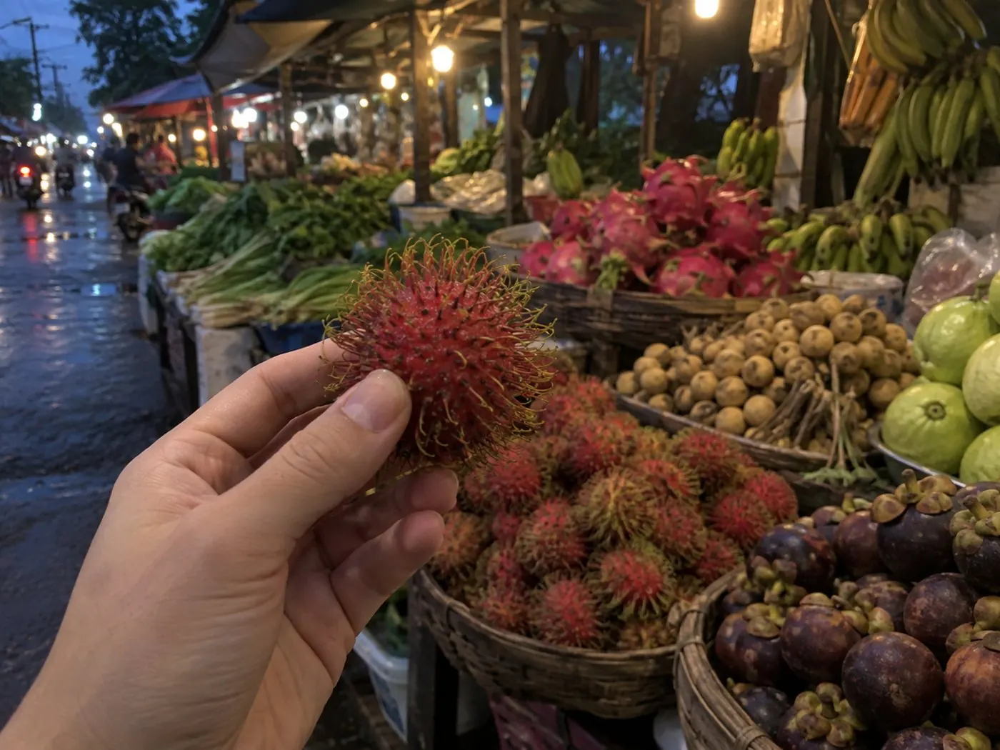

4K 영상
큰 TV로 봐도 선명하다.
[ EIDO ] AI 스마트안경
> 에이도를 한 겹씩 열어 봅니다_
01 프레임
TR 소재와 금속 탄성 힌지. 정장에도, 러닝복에도.
02 카메라
소니 센서로 4K 촬영. 2.5K로는 한 번에 최대 12분.
03 렌즈
블루라이트 차단 · 선글라스 · 변색, 3종 중 선택.
04 마이크
코받침에서 내 목소리만. 시끄러운 곳에서도 또렷하게.
05 다리
음악 약 10시간, 대기 7일 이상. USB-C 충전.
06 완성
쓰고 있다는 걸 잊는 무게.
촬영
안경 앞 버튼이라 생각하고 눌러 보세요. 한 번 누르면 사진, 두 번 누르면 영상. 찍은 건 Wi-Fi로 내 폰 갤러리에 바로 들어옵니다.
촬영 중에는 안경 바깥 LED가 켜져 상대방도 알 수 있습니다.
버튼을 눌러 보세요.
찍은 사진과 영상이 여기로 들어옵니다.
통역
상대 언어를 고르고, 하고 싶은 말을 눌러 보세요. 에이도가 대신 말해 줍니다.
통화
상대방에게 내 목소리가 어떻게 들리는지 비교해 보세요. 코받침 속 골전도 마이크가 뼈로 전해지는 진동을 잡아, 바람 소리 없이 목소리만 보냅니다.
주변 소음 내 목소리
And more
큰 TV로 봐도 선명하다.
걸으며 찍어도 보는 사람이 어지럽지 않게.
유튜브는 가로로, 릴스는 세로로. 자르지 않고 그대로.
회의가 끝나면 정리도 끝나 있다.
“이거 뭐야?” 물으면 보고 답한다.
뒤쪽 버튼을 길게 누르면 안경만으로 녹음된다.
귀를 막지 않아 주변 소리가 들린다.
쓰던 폰 충전기로 그대로.
AI
“이거 뭐야?” 눈앞의 걸 보고 물으면, 답은 귀로 들려줍니다.
AI 기능은 Microsoft의 AI 서비스로 처리되며, 처리 업체는 앱 업데이트에 따라 바뀔 수 있습니다.

무게
TR 소재와 금속 탄성 힌지라 오래 써도 조이지 않습니다. 쓰면 켜지고, 벗으면 꺼집니다.
안심
찍은 사진과 영상은 안경에서 Wi-Fi로 내 폰에 바로 옮겨 저장됩니다. 중간 서버를 거치지 않습니다.
AI에게 묻고 답한 내용은 AI 학습에 쓰이지 않습니다.
촬영하는 동안 바깥쪽 LED가 켜져 상대방도 알 수 있습니다.
AI 기능 이용 시 질문·음성은 처리를 위해 해외 클라우드로 전송되며, 처리 방식은 전용 앱 개인정보처리방침을 따릅니다.
렌즈 너머로 · 블루라이트 차단
렌즈
블루라이트 차단, 선글라스, 변색. 3종 중 원하는 렌즈를 골라 끼울 수 있습니다. 눌러서 바꿔 끼워 보세요.
화면 앞에서 오래 일할 때. 모니터의 차가운 빛을 덜어 줍니다.
비교
기록 성능만 놓고 나란히 봤습니다.
| 항목 | 에이도 | M사 | S사 |
|---|---|---|---|
| 가격 | 399,000원 | 690,000원부터 | 11월 출시 예정 · 공식 사양 발표 후 공개 |
| 카메라 | 2,000만 화소 | 1,200만 화소 | |
| 영상 | 4K | 3K | |
| 한 번에 촬영 | 최대 12분 (2.5K) | 최대 3분 | |
| 방수·방진 | IP66 | IPX4 |
M사: 2026년 5월 국내 정식 출시 AI안경 2세대 기준, 제조사 공식 사양(2026.10 확인). S사: 2026년 11월 출시 예정, 공식 사양 발표 후 반영. 에이도: 제조사 사양 기준. 한 번에 촬영 시간은 에이도 2.5K 촬영, M사 기본 최대 녹화 길이 기준. 위 항목에 한한 비교입니다.
에이도 구입하기 →FAQ
네. 전용 앱이 iOS와 Android 모두 있습니다.
촬영과 녹음은 안경 버튼만으로 됩니다. 사진·영상을 폰으로 옮기거나 AI·통역을 쓰려면 전용 앱이 필요하고, AI·통역은 인터넷 연결이 필요합니다.
IP66이라 비, 땀, 물 튀김은 괜찮습니다. 물에 담그기, 샤워·수영, 초음파 세척은 안 됩니다. 세척은 렌즈만 빼서 물로, 프레임은 젖은 천으로 닦아 주세요.
블루라이트 차단, 선글라스, 변색 3종 중에서 고를 수 있습니다.
구입 후 1년입니다.